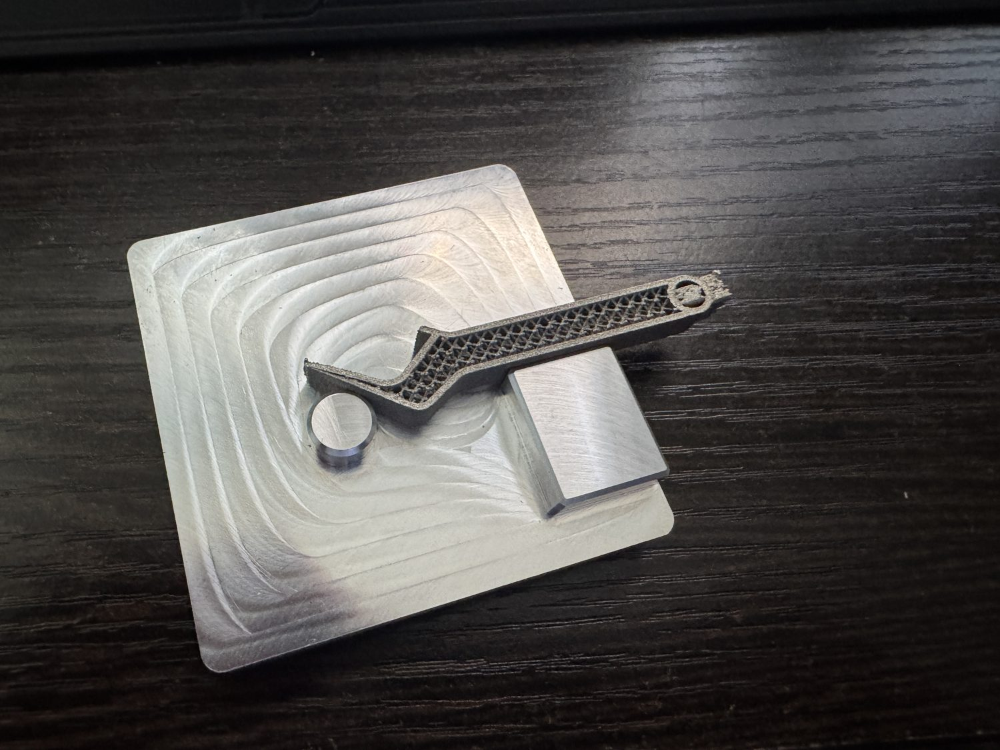

Timeline
Project Development
This project is filled from the available folder media, which shows a bottle opener fixture, V1/V2 fixture iterations, Wire EDM setup photos, and before/after bottle opener results. The project appears to center on making the bottle opener easier to locate and machine repeatably in the Wire EDM by improving the fixture and setup process. I treated the image sequence as a workholding and process-planning project: define how the part should be held, iterate the fixture, set up the EDM operation, and compare the machined result. Exact course context, tolerances, material, and final inspection data are still TBD.

-
Concept
Defined Fixture and Part-Holding Goal
Established the need for a bottle opener workholding setup that could support Wire EDM machining.
- Media context suggests the main challenge was holding the bottle opener consistently for EDM work.
- Fixture design had to support the part while leaving the machined features accessible.
- Exact part material, tolerances, and course context are TBD.
-
Fixture iteration
Iterated Fixture Geometry
Compared early and later fixture versions to improve the setup for the bottle opener part.
- The V1 and V2 images show visible fixture iteration.
- The setup appears to move toward a more stable, repeatable part location.
- Exact design changes and reason for each revision are TBD.
-
EDM setup
Set Up the Wire EDM Operation
Used the fixture to hold the bottle opener during the EDM setup and cutting process.
- Setup photos show the fixture and bottle opener positioned in the machine.
- The fixture supports access to the cutting area while constraining the part.
- Machine settings, datum strategy, and operation sequence are TBD.
-
Result
Compared the Machined Bottle Opener Result
Documented the bottle opener result with before/after and close-up media.
- Before/after imagery shows the part progression.
- Close-up media highlights the machined feature quality.
- Final inspection results and acceptance criteria are TBD.